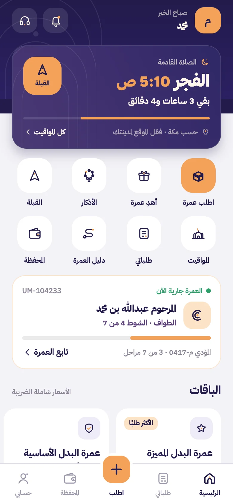

عمرة البدل عن المتوفى والعاجز
عمرةٌ عمّن تُحب
عن والديك ومن رحل ومن عجز، يؤدّيها مؤدٍّ موثّق في مكة، وتتابعها بالفيديو مرحلة بمرحلة، وتستلم شهادة إتمام باسمه.
- مؤدّون موثّقو الهوية
- فيديو لكل مرحلة
- شهادة إتمام باسمه

أربع خطوات من جوالك
كيف تشتغل عمرتهم؟
تطلب من بيتك، ونتكفّل بالباقي في مكة، وتشوف كل شيء بعينك.
اختر الباقة واكتب الاسم
تختار الباقة المناسبة، وتكتب اسم المستفيد كاملًا وصلة القرابة، وتحدد الوقت: أقرب وقت، أو يوم الجمعة، أو تاريخ تختاره.
تدفع ونُسند لمؤدٍّ موثّق
بعد الدفع نُسند طلبك لمؤدٍّ موثّق الهوية مقيم في مكة اعتمر عن نفسه، ويظهر لك رقمه وتقييمه في التطبيق.
تتابع المراحل السبع بالفيديو
من الإحرام والنية باسمه حتى التحلّل، يصلك فيديو أو صورة لكل مرحلة مختومة بالوقت والموقع، مع إشعار فوري.
تستلم الشهادة وملف التوثيق
بعد مراجعة فريقنا لكل المراحل تصدر شهادة الإتمام باسمه مع ملف التوثيق الكامل، وتقدر تشاركها مع العائلة.
من الميقات إلى الشهادة
سبع مراحل، كلها موثّقة
هذا الذي يصير في عمرته، وهذا الذي يصلك منه. لا نكتفي بصورة واحدة في النهاية؛ كل مرحلة لها توثيقها.
- المرحلة 1
إسناد المؤدي
اخترنا له مؤدّيًا موثّق الهوية اعتمر عن نفسه
- المرحلة 2
الإحرام والنية
يُحرم من الميقات وينطق النية باسم المستفيد في فيديو
- المرحلة 3
الطواف
سبعة أشواط حول الكعبة، مع عدّاد للأشواط ومقاطع موثّقة
- المرحلة 4
المقام وزمزم
ركعتان خلف المقام، وشرب من زمزم
- المرحلة 5
السعي
سبعة أشواط بين الصفا والمروة بالتوثيق نفسه
- المرحلة 6
الحلق أو التقصير
يتحلّل المؤدي وتتم العمرة بحمد الله
- المرحلة 7
الشهادة والتقرير
يراجع الفريق كل المراحل ثم تصدر الشهادة وملف التوثيق
الثقة من الإجراء نفسه
ليش تطمّن معنا؟
ما نطلب منك أن تثق بكلامنا. نبني كل خطوة بحيث تقدر تتأكد بنفسك.
مؤدّون موثّقو الهوية
كل مؤدٍّ نتحقق من هويته ومن أنه مقيم في مكة واعتمر عن نفسه قبل أن يعتمر عن غيره.
تحقق من الموقع قبل كل مرحلة
يفتح التصوير فقط عندما يكون المؤدي في الميقات أو داخل الحرم، فتعرف أن كل مرحلة صُوّرت في مكانها.
كاميرا داخل التطبيق فقط
لا يُرفع أي مقطع من المعرض. الفيديو يُسجَّل من داخل التطبيق بختم الوقت والموقع.
مراجعة الفريق قبل الشهادة
لا تصدر شهادة الإتمام إلا بعد أن يراجع فريقنا المراحل السبع كاملة.
استرداد كامل قبل التنفيذ
غيّرت رأيك قبل بدء التنفيذ؟ المبلغ يرجع كاملًا لمحفظتك فورًا أو لبطاقتك.
متابعة حية وإشعارات
يصلك إشعار مع كل مرحلة، وتشوف تقدّم العمرة لحظة بلحظة من التطبيق.
أسعار واضحة بعملة بلدك
باقات عمرة البدل
كل الباقات تشمل مؤدّيًا موثّق الهوية، وتوثيقًا بالفيديو، وشهادة إتمام باسم المستفيد. اختر بلدك لتشوف السعر بعملتك.
يمكنك إضافة الشهادة مطبوعة ومؤطّرة لأي باقة عند الطلب. وتتوقف تصاريح العمرة في موسم الحج تقريبًا من 1 ذي القعدة إلى 14 ذي الحجة، فنستقبل فيها حجوزات مسبقة فقط.
باختصار وبلا تهويل
الضوابط الشرعية لعمرة البدل
نلتزم بما قرره أهل العلم في الإنابة في العمرة، ونذكّرك أن المسائل الخاصة تحتاج سؤال عالم تثق به.
تجوز عن المتوفى
يجوز أن يعتمر المسلم عن قريبه المتوفى، ويصل إليه ثوابها بإذن الله.
وتجوز عن الحيّ العاجز
عن الحي الذي لا يستطيع أداءها بنفسه لعجز لا يُرجى زواله، كمرض مزمن أو كبر سن.
ولا تصح عن الحيّ القادر
من يستطيع أداء العمرة بنفسه لا تصح الإنابة عنه، ولذلك نسأل عن حالة المستفيد عند الطلب.
شروط المؤدي
مسلم بالغ عاقل، اعتمر عن نفسه أولًا قبل أن يعتمر عن غيره، وهذا ما نتحقق منه قبل قبوله.
النية والتلبية باسم المستفيد
ينوي المؤدي عند الإحرام ويلبّي باسم المستفيد: «لبيك عمرةً عن فلان»، ويوثّق ذلك في فيديو يصلك.
عمرة واحدة لشخص واحد
العمرة الواحدة تكون عن شخص واحد فقط، وإذا أردت العمرة عن أكثر من شخص فلكل واحد عمرته.
لكل الخليج
من أي مكان في الخليج
سجّل برقم جوالك من أي دولة خليجية، واطلب عمرته وأنت في بيتك، والأسعار تظهر لك بعملتك المحلية.
- السعوديةالأسعار بـر.س
- الإماراتالأسعار بـد.إ
- الكويتالأسعار بـد.ك
- قطرالأسعار بـر.ق
- البحرينالأسعار بـد.ب
- عُمانالأسعار بـر.ع
سؤال وجواب
الأسئلة الشائعة عن عمرة البدل
من يؤدي العمرة عن قريبي؟
مؤدٍّ مقيم في مكة، موثّق الهوية عندنا، اعتمر عن نفسه أولًا، ويحمل تصريح عمرة نظاميًا باسمه لكل عمرة. نختاره لك من المتاحين ونعرّفك عليه في التطبيق برقمه وتقييمه.
كيف أتأكد إن العمرة تمّت فعلًا؟
تتابع كل مرحلة من المراحل السبع في التطبيق بفيديو أو صورة مسجّلة من داخل التطبيق فقط، مختومة بالوقت والموقع. ولا تصدر شهادة الإتمام إلا بعد أن يراجع فريقنا كل المراحل.
هل تصح عمرة البدل عن الحي؟
تصح عن الحي العاجز عجزًا لا يُرجى زواله، بسبب مرض أو كبر سن. أما القادر على أداء العمرة بنفسه فلا تصح عنه. وفي الحالات الخاصة ننصحك بسؤال أهل العلم.
كم تستغرق عمرة البدل؟
حسب الباقة: الأساسية خلال 7 أيام، والمميزة خلال 72 ساعة، والعاجلة خلال 24 ساعة حسب توفّر التصاريح. وتقدر تختار يوم الجمعة أو تاريخًا محددًا عند الطلب.
هل أقدر ألغي الطلب وأسترد المبلغ؟
نعم. قبل بدء التنفيذ تسترد المبلغ كاملًا، وتختار يرجع لمحفظتك فورًا أو لبطاقتك خلال 3 إلى 7 أيام عمل. بعد ما يبدأ المؤدي الإحرام ما يمكن الإلغاء. وإذا صار خطأ من جهتنا في الاسم أو الجنس نعيد العمرة أو نسترد لك المبلغ.
هل أقدر أطلب عمرة عن أكثر من شخص؟
نعم، كل عمرة لشخص واحد ولها طلبها وشهادتها. وباقة الوالدين فيها عمرتان، وباقة الوفاء خمس عمرات تقدر توزّعها على أكثر من شخص.
ما هو الدعاء الخاص؟
في الباقات التي تتيحه، تكتب دعاءً بنصّك، ويدعو به المؤدي باسم المستفيد عند الملتزم أو في الطواف، ويُذكر ذلك في التوثيق.
هل تصلني شهادة مطبوعة؟
الشهادة الرقمية تصدر لك في التطبيق باسم المستفيد لكل عمرة. وتقدر تضيف الشهادة مطبوعة ومؤطّرة بسعر إضافي، وتصلك لباب بيتك خلال أيام من الإتمام.
ما هي طرق الدفع؟
مدى وApple Pay والبطاقات البنكية تُفعَّل قريبًا في التطبيق، إضافة إلى المحفظة التي يرجع لها الاسترداد فورًا. الأسعار شاملة ضريبة القيمة المضافة وتظهر بعملة بلدك.
هل يمكن إهداء العمرة لشخص آخر؟
نعم، تطلب العمرة باسم المستفيد، وبعد الإتمام تشارك الشهادة وملف التوثيق مع من تحب من التطبيق مباشرة.
كله في تطبيق واحد
عمرتهم في جوالك
الطلب يكون من التطبيق: تختار الباقة، وتكتب الاسم، وتتابع المراحل، وتستلم الشهادة. التطبيق في مراجعة المتاجر وسيتوفر قريبًا، وإلى ذلك الحين يستقبل فريقنا طلباتك على واتساب.